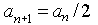
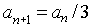
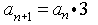
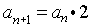

Item: tModelExtendTableGeometric3b
Stimulus:
Weekly attendance figures for a movie shown at a theater
are given in the chart below.
Weekly Attendance Figures
| Week |
Attendance |
| 1 |
225 |
| 2 |
450 |
| 3 |
900 |
| 4 |
1,800 |
Stem:
Which equation best describes the behavior of attendance in this theater,
where n is the week and
a is attendance?
Options:




Key:
- Observable: 1.
Score: 0;
Evidence Value: 0.
-
Student:Sorry, that's not right. The equation you selected would be correct if attendance
decreased by a factor of 2 each week. But attendance increases by a factor of 2 each week. For example, in week two, there are 450 attendees, which is two times 225, the number of attendees in week one. You should multiply the attendance for a given week by 2 to get the attendance for the following week.
-
Teacher:The student divided by 2 instead
of multiplying.
- Observable: 2.
Score: 0;
Evidence Value: 0.
-
Student:Sorry, that's not right. The equation you selected would be correct if attendance
decreased by a factor of 3 each week. But attendance increases by a factor of two each week. For example, in week two, there are 450 attendees, which is two times 225, the number of attendees in week one. You should multiply the attendance for a given week by two to get the attendance for the following week.
-
Teacher:It's possible that the student
doesn't see that you have to multiply by 2 for each
successive number.
- Observable: 3.
Score: 0;
Evidence Value: 0.
-
Student:Sorry, that's not right. The equation you selected would be correct if attendance
increased by a factor of 3 each week. But attendance increases by a factor of two each week. For example, in week two, there are 450 attendees, which is two times 225, the number of attendees in week one. You should multiply the attendance for a given week by two to get the attendance for the following week.
-
Teacher:The student multiplied by 3 instead of by 2.
- Observable: 4.
Score: 1;
Evidence Value: 1.
-
Student:Correct, good job!
-
Teacher:Student has answered correctly.
Metadata:
Item Node: tModelExtendTableGeometric3b,
Difficulty: 3.
Proficiencies: ModelGeometric,
TableGeometric,
ExtendGeometric.